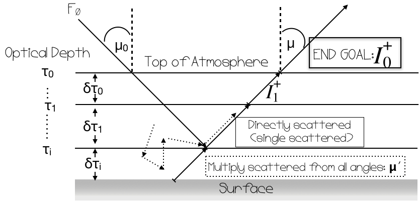

Azimuthally averaged intensity emergent from the top of layer with opacity (\(\tau\)) and outgoing angle (\(\mu\)) (see xint )
Incident intensity on the lower boundary of the layer attenuated by the optical depth within the layer (\(\delta\tau\))
$$S(\tau',\mu)=\frac{\omega}{4\pi} F_0P_{single}(\mu, -\mu_0)e^{-\tau'/\mu_s} + \frac{\omega}{2} \int_{-1}^{1} I(\tau', \mu') P_{multi}(\mu, \mu') d\mu'$$ Source function\(=\)Single-scattered radiation\(+\)multiple-scattered radiation (integrated over all diffuse angles). Note, absence of thermal term.
\(\omega\): Single scattering albedo (W0 )
\(F_0\):Direct stellar radiation
\(P_{single}(\mu,\mu_0)\):single-scattering phase function (see p_single )
\(P_{multi}(\mu,\mu')\):multiple-scattering phase function (see multi_phase )

Integrating the Source Function
Source Function = Single scattered radiation + Multiple scattered radiation.
Let's integrate them separately.
Part 1: Single Scattering Component
We can separate the integration of the source function into two parts. Note, that single scattering is simpler in that it does not need to be integrated through all diffuse angles, like multiple scattering term.
First, the \(\tau'\) in \(e^{-\tau'/\mu_0}\) is actually comprised of two terms: 1) the integrated opacity from TOA to the top of the considered layer, and 2) the opacity within the considered layer. Therefore, we first have to replace \(e^{-\tau/\mu_0}\), with \(e^{-(\tau_i + \tau')/\mu_0}\). Now, our \(\tau'\)s in the above equation represent the same value and we can proceed with our integration.
$$\color{yellow}{=\frac{\omega}{4\pi} F_0P_{single}(\mu, -\mu_0)\int_0^{\delta\tau_i}e^{-(\tau'+\tau_i)/\mu_0}e^{-\tau'/\mu} d\tau'/\mu}$$ By integrating, we arrive at the final term, which can easily be ffound in the code here():
We're not done yet! We still have to choose a formalism for the phase function, \(P_{single}\).
For single scattering we exclusively use various forms of the Henyey-Greenstein (HG) phase function. $$P_{OTHG}(\cos \Theta) = \frac{1}{2} \frac{1-g^2}{[1 + g^2 - 2g\cos \Theta]^{3/2}}$$ The OT in the equation above stands for "one-term" because there is only a single representation of the assymetry parameter, \(g\). \(g\) can be any value between -1 and 1 depending on if the light is expected to be backwards of forward scattering. Check out the demo below.
The OTHG formalism can be set using the key approx['single']="OTHG" in PICASO.
We will go through three additional methods on the next page.
Single Scattering Continued
Two term HG Phase Fun
If the OTHG phase function was all we used we'd fail to capture both the symmetric nature of Rayleigh scatterers, and the hightly asymmetric nature of cloud particles. We also need a methodology that captures both forward, \(g_f\), and backwards, \(g_b\), scattering--hence the Two Term HG (TTHG) phase function.
The form of the TTHG is (): $$P_{TTHG}(\cos\Theta) = f P_{OTHG}(\cos\Theta,g_{f}) + (1-f)P_{OTHG}(\cos\Theta,g_{b}).$$
In addition to having two \(g\)'s, we also have a new parameter \(f\)--the fraction of forward to back-scattering.
The TTHG formalism can be set using the key approx['single']="TTHG" in PICASO. But we must also define \(f, g_f\), and \(g_b\).
By default, we set \(g_f = \bar{g}\) ,\(g_b = -\bar{g}/2\), and \(f = 1-g_b^2\). \(\bar{g}\) is calculated from the cloud asymmetry factor, the rayleigh and the cloud scattering opacity (see cosb). But, users can experiment with their own specifications.
The last step is to incorporate the Rayleigh phase function. The TTHG+Rayleigh formalism can be set using the key approx['single']="TTHG_Ray" in PICASO
Adding Rayleigh
The last thing to take care of is the incorporation of the Rayleigh function. Rayleigh scattering has the following functional form: $$P_{ray}(\cos \Theta) =\frac{3}{4}(1+\cos^2(\Theta))$$
In order to incorporate BOTH Rayleigh and cloud scattering properties, we use a combination of the TTHG phase function with Rayleigh. We weight them by the fractional opacity of each.
$$P_{TTRAY} = \frac{\tau_{cld}}{\tau_{scat}}P_{TTHG} + \frac{\tau_{ray}}{\tau_{scat}}P_{Ray}$$
This way in the limit where each dominates, we take on the functional form of the most relevant phase function.
Integrating the Source Function
Source Function = Single scattered radiation + Multiple scattered radiation.
Let's integrate them separately.
Part 2: Multiple Scattering Component
Multiple scattering is a bit more involved because we must integrate over all diffuse angles, \(\mu\).
Exactly as we did with single scattering, we must pick a functional form for the phase function. Because of the extra integration, we will have to deviate from the TTHG+Rayleigh approach. Often, infinite series of suitable orthogonal basis functions can be used (e.g. Legendre or Chebyshev). Currently PICASO only uses Legendre, although it's been shown that at higher orders and high \(g\) Chebyshev polynomials might be more accurate.
Legendre polynomials, allow the phase function to be written as: $$P_{multi}(\cos\Theta) \approx \sum_{l=0}^{N-1} \beta_lP_l(\cos\Theta)$$
Where \(P_l(cos\Theta)\) are the polynomials. \(\beta_l\) are the moments of the phase function. They can be written out as
$$\beta_l = \frac{2l + 1}{2} \int_1^{-1} P_l(\cos\Theta)p(\cos\Theta)d\cos\Theta$$
This should look familiar, as the asymmetry factor is \(g = \frac{1}{2} \int_1^{-1}P_l(\cos\Theta)p(\cos\Theta)d\cos\Theta \). Therefore, the moment can be simplified to \(\beta_l = (2l + 1)g_l \). Expanding these polynomials and determining what to use for the \(g_l\)'s' are not necessarily trivial.
Starting with a N=1 Legendre expansion, which can be accessed using approx['multi']="N=1" in PICASO
With \(\bar{g}\), the N=1 expansion is simply: $$P_{multi}(\cos\Theta) = 1 + 3 \bar{g}\cos\Theta = 1 + 3 \bar{g} \mu\mu'$$
Because if we are assuming azimuthal independence then \(\cos\Theta\) simplifies to \(\cos\Theta = \mu \mu'\).
Putting this back into the source function creates a manageable integral.
The N=2 Legendre expansion, which can be accessed using approx['multi']="N=2" in PICASO, is slightly more complicated due to the calculation of the second moment.
Many authors
Originating from K.Snook's dissertation work. Then later published in Cahoy+2010 leverage the fact that the second order dependence on \(\cos^2\Theta\) is the same as that of Rayleigh scattering \( \left( \frac{3}{4}(1+\cos^2(\Theta)) \right)\). By forcing \(\beta_l=(2l+1)g_l=g_2\) to yield the Rayleigh phase function in the limit where Rayleigh opacity dominates, we can accurately account for Rayleigh scattering in the second moment:
$$ \beta_2=\frac{\tau_{ray}}{2\tau_{scat}} =g_2$$
This tends to 1/2 when \(\tau_{scat}\) is dominated by Rayleigh opacity. The full phase function is then
$$P_{multi}(\mu , \mu') = 1 + 3\bar{g} \mu\mu' + g_2 \frac{1}{2}\left(3\mu^2 \mu'^2 - 1 \right).$$
Multiple Scattering: Comparing Phase Functions
Delta-Scaling to Improve Accuracy
Unfortunately, low order (N=1,2) phase functions are not adequate enough to represent high forward scattering, i.e. highly asymmetric scatteres.
One way of making lower order approximations more accurate is to leverage the \(\delta\)-Eddington Approximation. In this approxmation, \(\bar{g}, \tau, \omega\) are all scaled to more accurately capture the forward scattering peak:
$$g'=\frac{\bar{g}}{1+\bar{g}}, \tau' = \tau(1-\omega\bar{g}^2), \omega' = \frac{\omega(1-\bar{g}^2)}{1-\omega\bar{g}^2}$$
The \(\delta\)-Eddington approximation can be accessed by using the approx['delta_eddington']=True in PICASO.
Take some time to explore these approximations. You should takeaway the following points:
At \(g=0\), 2nd order Legendre polynomials approach Rayleigh scattering phase function
Approximations are only decent at low \(g=0\) (Note, that in cases where these phase functions are been compared for accuracy people will usually show low assymetry values, \(g\approx0.1\))
Delta-Scaling for asymmetry goes as \(g_d=g/(g+1)\) so the forward scattering is reduced to regions where it is in higher agreement with TTHG.
Comparing Multiple Scattering Approximations
Multiple Scattering: Integrating through all angles
Now we can finally go forth with our Multiple Scattering Integration
Avert your eyes if you don't care for math. We are starting from the multiple scattering component of the source function:
$$=\int_0^{\delta\tau_i} e^{-\tau_i/\mu} \int_{-1}^1 \frac{\omega}{2} I(\tau', \mu') \left( 1 + 3\bar{g} \mu\mu' + \frac{g_2}{2} (3\mu^2 \mu'^2 - 1) \right) d\mu' d\tau'/\mu$$
There are three terms in the integration over \(\mu'\). Let's step through them individually.
Term 1 \(= \omega \frac{1}{2}\int_{-1}^1 I(\tau', \mu')d\mu' =\omega \bar{I}(\tau')\)
\( \bar{I}=\frac{1}{2}\int I d\mu'\) is just the mean intensity, which we can use the 2-stream approximation to calculate \( \bar{I}=\frac{I^{+} + I^{-}}{2} =\frac{1}{4\pi\bar{\mu}} (F^+-F^-) \).
This is because first moment of the intensity field is \(F=2\pi \int I \mu'd\mu'\). In the 2-stream approximation \(F=F^+-F^-\).
Term 3 \(= \omega \frac{g_2}{2}\int_{-1}^1 I(\tau', \mu') (3\mu^2\mu'^2 - 1)d\mu'\)
If we define the second moment of intensity \(I_2 = \int_1^{-1} \mu'^2 I d\mu'\) the solution becomes:
\( \frac{\omega g_2}{2} \left( 3\mu^2 I_2(\tau') - \bar{I}(\tau') \right) \). The best way of dealing with this is to create a mean square angle,
\(\bar{\mu_2}^2= \int\mu'^2Id\mu'/ \int Id\mu' \). Then we can rewrite Term 3 with just the fluxes: $$ = \frac{\omega g_2}{2} (3 \mu^2 \bar{\mu_2}^2 - 1)(\frac{1}{4\pi\bar{\mu}}) (F^+ + F^-). $$
Toon+1992 showed that all two-stream equations have the same general form:
$$F^+ = k_1e^{\lambda\tau} + \Gamma k_2e^{-\lambda\tau} + C^+(\tau),
F^- = \Gamma k_1e^{\lambda\tau} + k_2e^{-\lambda\tau} + C^-(\tau)$$
\(k_1\) and \(k_2\) are determined by the boundary conditions. Although we won't go through it in depth, PICASO uses a tri-diagonal matrix solver to compute these.
The derivation of \(C^+\) and \(C^-\) can also be found in Toon. For completeness, their forms are
$$C^+(\tau) = F_0\omega_0 \frac{\gamma_3 (\gamma_1 - \frac{1}{\mu_0})+\gamma_4\gamma_2 }{\lambda^2 - \frac{1}{\mu_0^2}} e^{\frac{-(\tau_i + \tau')}{\mu_0}}$$
$$C^-(\tau) = F_0\omega_0 \frac{\gamma_4 (\gamma_1 - \frac{1}{\mu_0})+\gamma_3\gamma_2 }{\lambda^2 - \frac{1}{\mu_0^2}} e^{\frac{-(\tau_i + \tau')}{\mu_0}}$$
Remember from the Single Scattering integration, we have separated \(e^{-\tau/\mu_0}\) into the opacity from: 1) the integrated opacity from TOA to the top of the considered layer, and 2) the opacity within the considered layer.
Finally, the full integrated solution is...(feel free to go through each parts of the integral!!)